Armin Ronacher · Earendil
Background
The map · stop 1 of 7
January 2025
Cursor autocompletes, ChatGPT explains. I write the code; the model debugs and prototypes. “Horrible at Rust.”
How I Use AI
The map · stop 2 of 7
June 2025
Claude Code with full permissions. I stop typing and start reviewing. Not faster, but 30% more time in my day.
AI Changes Everything
The map · stop 3 of 7
September 2025
A 40,000-line Go service, more than 90% written by AI. I still review every line; the architecture stays mine.
90%
The map · stop 4 of 7
January 2026
MiniJinja, Rust to Go: 45 minutes of my time, ten hours of the agent’s, checked against the snapshot tests.
Porting MiniJinja to Go With an Agent
The map · stop 5 of 7
April 2026
Mario and Pi join Earendil. We build Pi with Pi, and the tracker floods: 2,504 auto-closed in 90 days.
Building Pi With Pi
The map · stop 6 of 7
June 2026
Harnesses that keep going after the model says it’s done. Great for ports and research. For my code, I resent them.
The Coming Loop
The map · stop 7 of 7
November 2026
In June I resented loops. In November, a coordinator and its sub-agents loop their way to a JavaScript engine in six days.
djs
The map · beyond
Next
The map ends here. The loops are coming either way; the open question is how a human still supervises.
The Coming Loop
Velocity
3.6×all GitHub contributions, 2024 vs. 2026 so far
21×commits per quarter in this chart
869 → 6,885public commits, 2024 vs. 2026
Sentry → CTOfrom engineering to running a company
Chart: my commits, 119 local repos, without Sentry’s. *To Nov 6.
The price · early 2026
Review · February 2026
“Historically, writing code was slower than reviewing code.” Not anymore. The queue now forms in front of me.
Slop in · Pi’s tracker, 90 days
3,145external issues and PRs
2,504auto-closed
8%of those PRs ever merged
Overflow · OpenClaw
2,500+open pull requests
“You can’t triage, you can’t review.”
If input grows faster than throughput, you have an accumulating failure.
November 2026 · and yet it loops
2,278commits since Nov 1
178klines of no_std Rust
38,069of 38,109 test262 tests pass
350 KBwasm, replaces QuickJS in Pi
djs commits by hour of day
Lines of Rust over time
Blue: 11 pm to 6 am, Vienna time. Rust every 2 hours.
Two months after asking “why are we doing this again?”
October 2026 · the game
656commits in 23 days
97klines of JavaScript, plus 28k of tests
2473D models, scripted in Blender
567narrated lines, English and German
The Glass Bird commits per day
Lines of game JavaScript over time
Blue: weekends, 43% of commits. src/ per day.
Made with my kids, with a guide so they can learn how it works.
October 2026 · the game
In the game
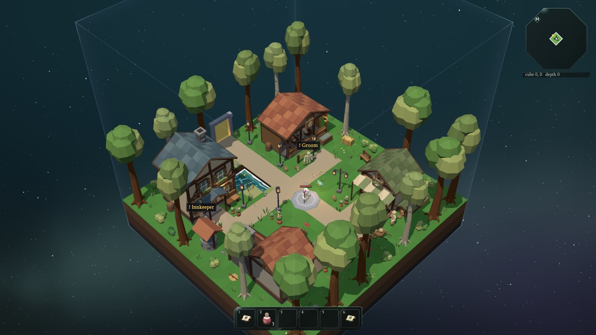
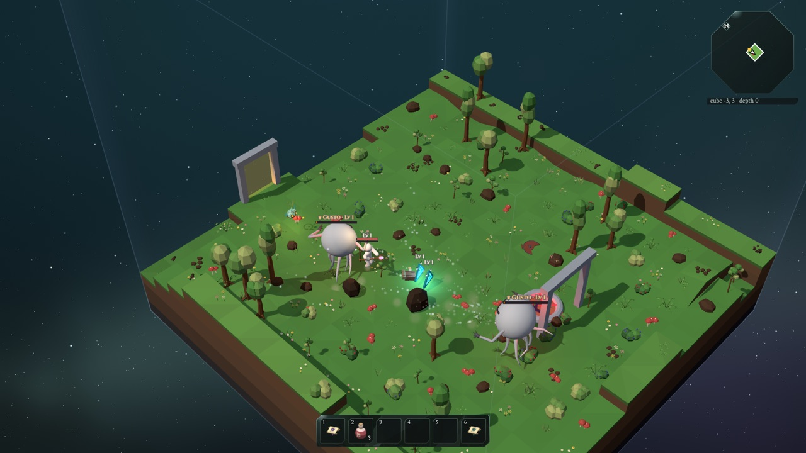
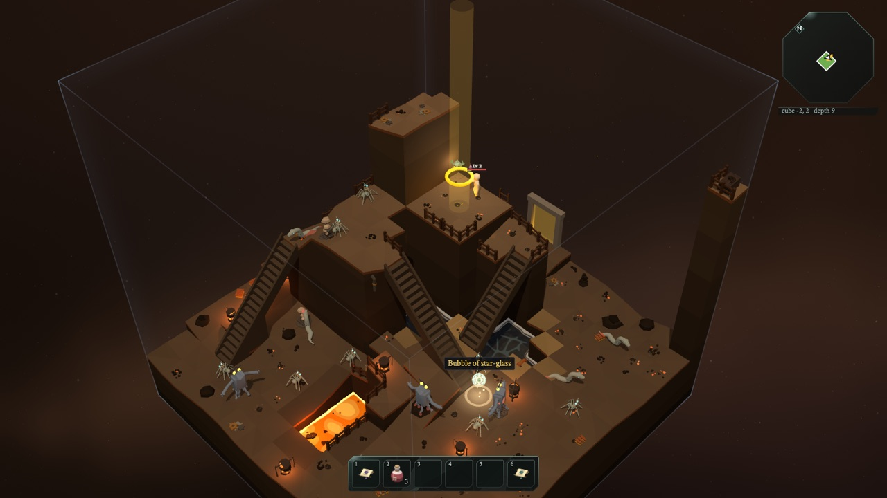
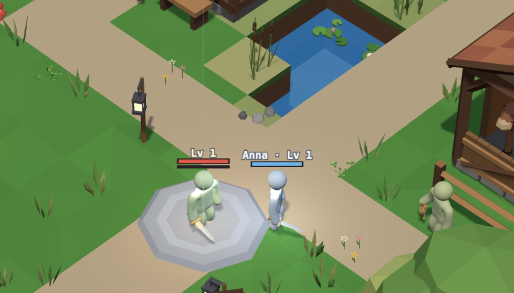
Some of its monsters, from Blender scripts
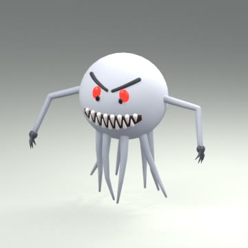
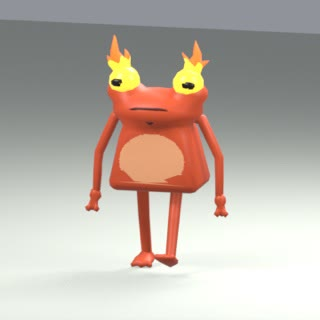
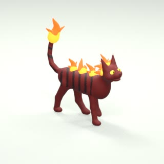
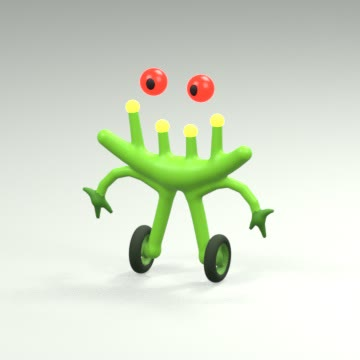
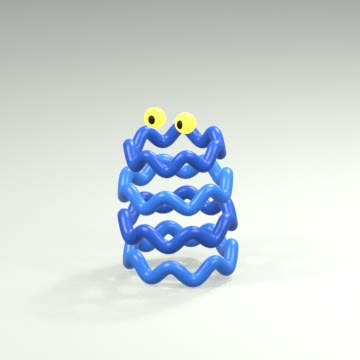
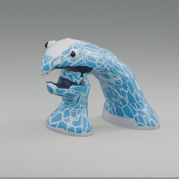
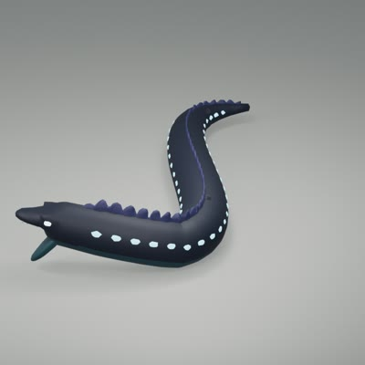
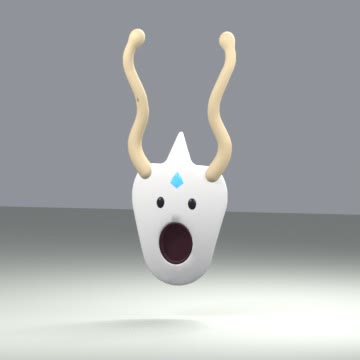
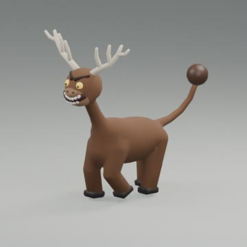
Pi and harnesses
2025
In a terminal. You watch it, you steer it, you restart it.
2026
Loops, sub-agents, a coordinator at 3 am. Nobody watches them all.
Next
A channel, a thread, a browser, all steering the same work.
That needs what the terminal never did: orchestration, multiplayer, durability.
Multiplayer
Stored, then shownEvery screen is a window onto storage, not onto the process.
Late is fineJoin or reconnect any time: the current view, then the changes.
Anyone can steerA correction waits for the next turn instead of cutting in.
What this means
PhotoCraft · October 2026
A clean-room clone in Rust, from public specs and the real Photoshop’s own renders. About 45% ready, by its own count.
Bun · May 2026
535,000 lines of Zig rewritten in Rust, merged as one pull request. Zero tests skipped.
Anthropic · 2026
From 2,500 changes merged per day in May to more than 30,000 in September.
When copying is cheap, the code is not the moat.
What this means · trust
Formal verification
123libraries proven crash-free on all inputs, in weeks
seL4 took two person-years to build and twenty to verify.
Deterministic builds
1,300+npm versions hit by Shai-Hulud
A build should be a function of its declared inputs, for agents and against worms.
Version control
5 monthsto move Anthropic off git
“A proper merge queue doesn’t make much sense at agent scale.”
The machine writes faster than we can read.
What this means · languages
The test suite is the asset. The language is a choice.
What this means · runtimes
A JavaScript engine for Pi, passing 38,069 of 38,109 test262 tests.
16 agents, 100,000 lines of Rust, and it builds Linux.
Lines of proven JS semantics, as the base for a verified compiler.
Specs and conformance suites are now the most valuable documents we have.
What this means · security
2.3×CVEs published, Jan–Oct 2026 vs. 2025
141exploited in eight months, more than all of 2025
100%of curl’s recent reports involved AI
Julycurl stopped taking reports, to breathe
“Since spring 2026 the slop reports are practically gone.”
Daniel Stenberg · curl, October 2026The reports are real now. That’s the problem.
Others will loop against your software. Little of it is ready.
At Earendil
Infrastructure, to build your own
The hard parts of a harness: agents that survive crashes, talk to many people at once and wake up on time.
earendil.com/posts/pi-durable
Off the shelf, and it extends itself
An agent you can use today. Tell it what you need and it writes its own skills and extensions.
pi.dev